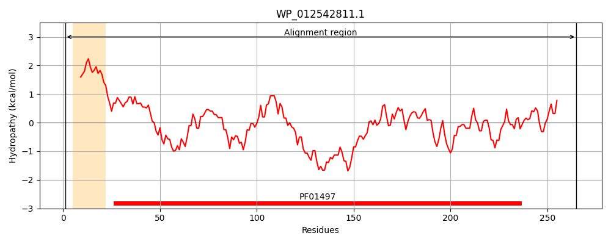
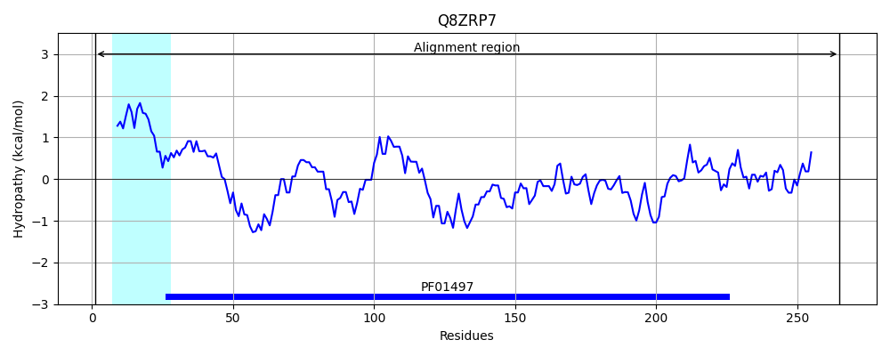
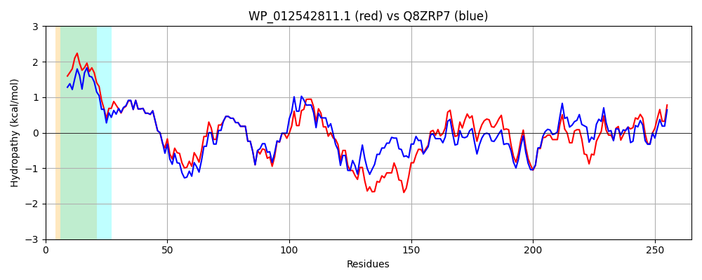

Hit Accession: Q8ZRP7
Hit TCID: 3.A.1.13.1
Hit Description: gnl|BL_ORD_ID|17142 gnl|TC-DB|Q8ZRP7|3.A.1.13.1 3.A.1.13.1 Vitamin B12-binding protein
Mach Len: 265
e:0.000000
Query TMS Count : 1
Hit TMS Count: 1
TMS-Overlap Score: 0.800000
Predicted Substrates:CHEBI:17439;cyanocob(III)alamin
BLAST Alignment:
Score: 1002 , Bit scores: 390 bits, E-value: 1.1e-138, Alignment length: 265, Percentage identity: 74
Query: 1 MAKSLSFALAALLLLAPAWLLAAPRVVTLSPANTELAFAAGITPVGVSSYSDYPPQAKTIEQVASWQGMNLERIVALKPDVVLAWRGGNAERQVNQLQSLGIHVLWVQTSTIEEIIATLRQLAQWSPQPEKAQQAAQAMQQEYDTLKARYANAPKKRVFLQFGSAPLFTSGPGSIQDQVLGLCGGENIFATSRVPWPQVSREQVLARQPQAIVVTGDASRIAEAQRFWQHQLTISLIALHSDWFERASPRIILAAKQLCAALDQV 265
MAK + AL ALLL P WL AAPRV+TLSPANTELAFAAGITPVGVSSYSDYPP+A+ IEQV++WQGMNLERIVALKPD+V+AWRGGNAERQVNQL SLGI V+WV TIE+I TLRQLA WSPQPEKAQQAAQ + EY L A YA KKRVFLQFG PLFTSG GSIQ QVL CGGEN+FA SRVPWPQVSREQVLAR PQAI+V G A I + +++W + L I +I L+SDWFERASPRIILAAKQLC AL QV
Sbjct: 1 MAKQMFRALVALLLTLPVWLYAAPRVITLSPANTELAFAAGITPVGVSSYSDYPPEAQKIEQVSTWQGMNLERIVALKPDLVVAWRGGNAERQVNQLTSLGIKVMWVDAVTIEQIADTLRQLAAWSPQPEKAQQAAQTLLNEYAALNAEYAGKAKKRVFLQFGMNPLFTSGKGSIQHQVLTTCGGENVFADSRVPWPQVSREQVLARHPQAIIVAGKAGEILKIEQYWGNLLKIPVIPLNSDWFERASPRIILAAKQLCNALSQV 265 | Protein Hydropathy Plots: |
|---|
|  |  |
Pairwise Alignment-Hydropathy Plot:
|
|---|
|  |